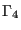
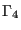
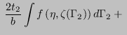
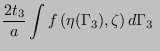
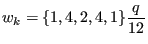
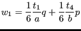
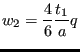

Next: General Up: Beam Section Types Previous: Pipe Contents
The Box section (contributed by O. Bernhardi) is simulated using a 'parent' beam element of type B32R.
The outer cross sections are defined by  and
and  , the wall thicknesses are ,
, the wall thicknesses are ,
 , and
, and  and are to be given by the user (Figure 84).
and are to be given by the user (Figure 84).
The cross-section integration is done using Simpson's method with 5 integration points for each of the four wall segments. Line integration is performed; therefore, the stress gradient through an individual wall is neglected. Each wall segment can be assigned its own wall thickness.
The integration in the beam's longitudinal direction  is done using the usual Gauss
integration method with two stations; therefore, the element has a total of 32 integration
points.
is done using the usual Gauss
integration method with two stations; therefore, the element has a total of 32 integration
points.
From the figure, we define, for example, the local coordinates of the first integration point
 |
(20) |
The other three corner points are defined correspondingly. The remaining points are evenly
distributed along the center lines of the wall segments. The length  and
and  of the line
segments, as given w.r.t. the element intrinsic coordinates
of the line
segments, as given w.r.t. the element intrinsic coordinates  and
and  ,
can now be calculated as
,
can now be calculated as
| (21) |
An integral of a function
), over the area of the
hollow cross section and evaluated w.r.t the natural coordinates
 ,
,  , can be approximated by four line integrals, as long as the
line segments
, can be approximated by four line integrals, as long as the
line segments  ,
,  ,
,  and  are narrow enough:
and  are narrow enough:
 |
|||
 |
 | ||
|  |  |
(22) |
According to Simpson's rule, the integration points are spaced evenly along each segment. For the integration weights we get, for example, in case of the first wall segment
|  | (23) |
Therefore, we get, for example, for corner Point 1
|  | (24) |
and for Point 2
|  | (25) |
The resulting element data (stresses and strains) are extrapolated from the eight corner integration points (points 1,5,9 and 13) from the two Gauss integration stations using the shape functions of the linear 8-node hexahedral element.
Remarks